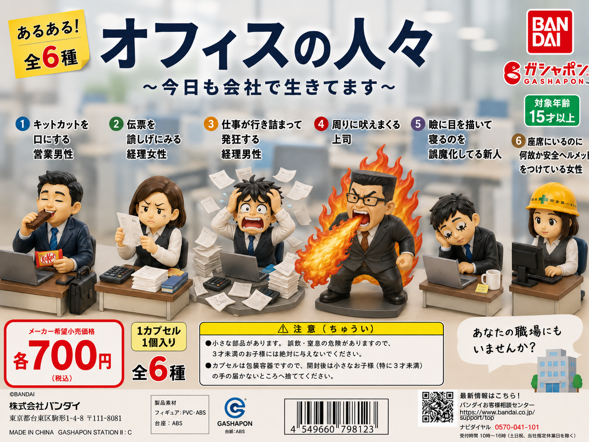
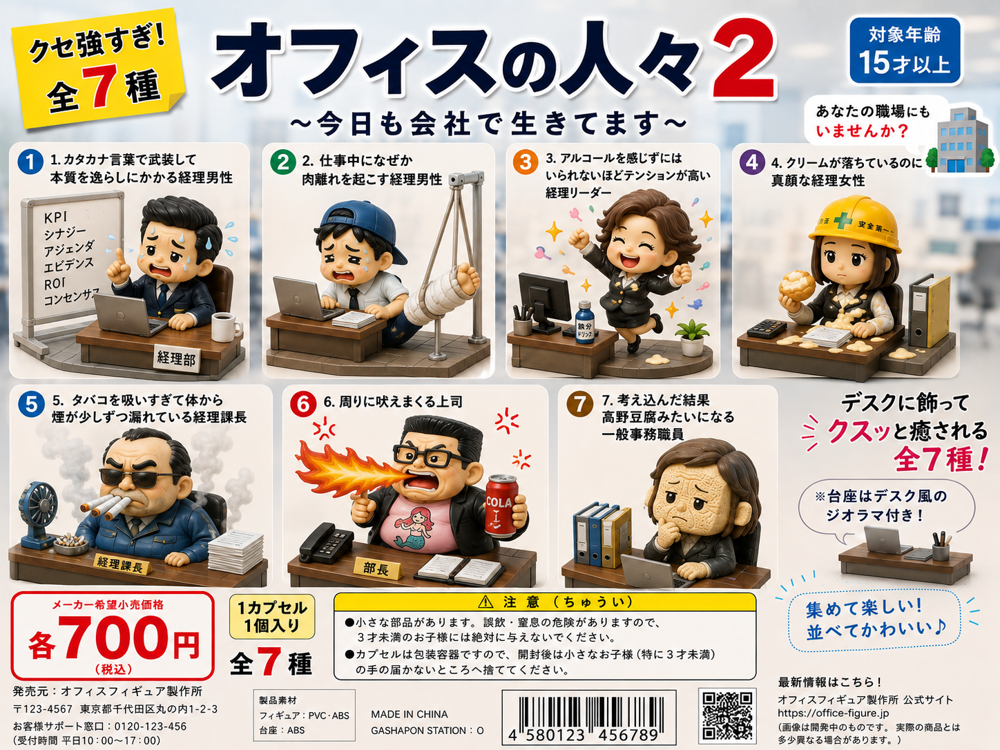

放心ラボは、役に立つのか立たないのか、よくわからないものを本気で考え、つくり、発表する研究所です。日常の中にある小さな違和感を拾い上げ、必要以上に真面目に形にしています。今日も、くだらない可能性を信じて。
採用された9件の研究です。
弊社に勤務する亀田主任補です。皆さんと同じように、今日もさまざまなものを背負っています。
亀田主任補のお休みを、少しだけ覗いてみましょう。どうやらオフの日も、なかなか大変そうです。

真面目そうに見える人たちだって、誰にでも遊び心はあるものです。そんな人々が集まる、とあるオフィスの日常を切り取りました。

好評だったわけでもありませんが、シリーズ最新作が登場です。なお、特定の人物をモチーフにしたものではありません。本当に。
私たちの知っている怪物たちだって、普段は家事や仕事に追われています。そんな彼らの日常を、少しだけ覗いてみましょう。
誰にだって、仕事を辞めたくなることはあります。でも、さすがにあなたに辞められるのは困るかもしれません。
筋力トレーニングは、今やごく一般的な趣味として知られるようになりました。その足音は、どうやら意外な分野にまで届いているようで……？
良質な粗悪品を取り揃えております。日々の暮らしに、ほんの少しの不便を。ぜひ一度お立ち寄りください。
類まれなる才能は、音楽だけにとどまらないのかもしれません。巨匠たちの意外な一面をご覧ください。
放心ラボは、日常の中にある「なんでやねん」を研究対象にする架空の企画研究所です。役に立つかどうかより、見た瞬間に少しだけ思考が止まるかどうか。その一瞬のために、企画・造形・広告まで本気で考えます。
更新履歴。